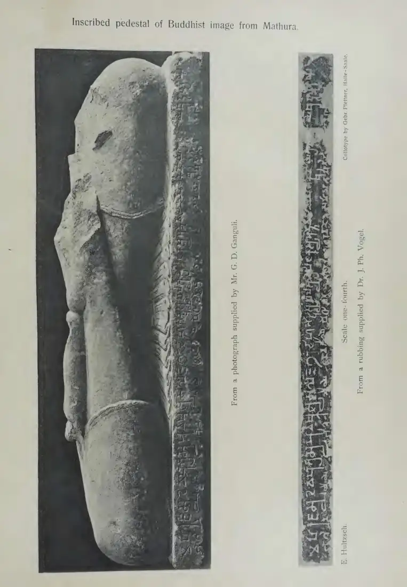

Dhulia plates of Karkarâja ; Śaka-Samvat 701
DHULIA PLATES OF KARKARAJA; SAKA-SAMVAT 701.
BY D. R. BHANDARKAR, M.A.
The plates which bear the subjoined grant were found deposited in the record room of the Collector's kachêri at Dhulia, Khandesh District, Bombay Presidency. They were sent for inspection to Mr. H. Cousens, who has kindly asked me to publish a paper on the inscription. A summary of it has already appeared in the Progress Report of the Archæological Survey of Western India for the year ending 30th June 1904, p. 60.
1 She occurs again in Sârnâth No. III. a, 1. 7.
2 From the original stone and from paper-impressions kindly supplied by Dr. Vogel.
3 The quantity of the last î is uncertain.
Plate 1 is bound after this page.
These are three copper-plates, the first and third of which bear writing on one side only, and the second on both sides. They measure each 1' 2" long by 7" broad. Their edges are slightly raised into rims for the protection of the inscription. On the left side of each plate there is a ring-hole, but the ring and the seal which must have accompanied the plates are both lost. A portion of the right side of the second, and of the lower corners of the first and third, plates have been broken off. The letters bear the usual marks of the working of the engraver's tool, throughout. Their size is about .— The language is Sanskrit throughout. Excepting ll. 24-26, the inscription is in verse up to line 28; and the rest is in prose, excluding ll. 33-4 and the benedictive and imprecatory verses at the end (ll. 42-8). All the verses of the genealogical part of this grant excepting five (vv. 6, 7, 9, 17 and 18) occur in other Rāshṭrakūṭa records.— The characters belong to the southern variety of alphabets. For some of the forms of individual letters, attention may be drawn to the two forms of kh, one in khaḍgaṅ (l. 4) and the other in śikharāni (l. 9); to the two forms of g, one in maṇdalāgró (l. 2) or gaṇaiḥ (l. 13), and the other in r=Góvindarāja° (l. 3) or kar-āgrā° (l. 5); to n in Śubhatuṅga° (l. 20); to j in tmajó ja° (l. 6) and dvijānām (l. 8); to t in kānt-ēndu° (l. 1); to n in vaitina° and nichuyaiḥ (l. 8); to bl in bhógika° (l. 29); to m in m=abhímukhím (l. 3); to the two forms of initial a or ā, one in āst° (l. 2) or asvamédha° (l. 44), and the other in aṅkén=ápi (l. 31); to the secondary i in má-linyáḥ (l. 14) and nirddalita° (l. 25); to the subscript ā in dhūma° (l. 8); to the two forms of the subscript ri, one in kritaṅ (l. 1), and the other in krit-ānukritih (l. 7); and to the visarya expressed by three dots in vishay-āntarggataḥ (l. 38), and by one dot and one short stroke in grāmaḥ (l. 40).— As regards orthography, the sign for v throughout serves for both v and b. The consonants following r are, as a rule, doubled, though indifference in this respect is in some cases observable; thus m is doubled in nirmmatha° (l. 22), but not in sūnur=mahípatiḥ (l. 18). Gha is used instead of h in rájasigha (l. 3); final n before a consonant is no less than five times wrongly changed to an anusvāra, e.g. in yaṅ-nābhi-kamulaṅ (l. 1) and yasmiṅ praśúsati (l. 8); t is doubled before r, e.g. in góttra° (l. 7); and anusvāra is changed once to the dental nasal before s in likhit-ānsa-píṭhaḥ (l. 11). The rules of Sandhi have been frequently disregarded, and in many a place aksharas have been omitted by the writer.
The inscription records a grant by the Rāshṭrakūṭa chieftain Karkarāja or, as he is described in lines 28-29, “Suvarnavarsha Pratāpaśila1 śrí-Karkarāja who has obtained the five great sounds.” Karkarāja is spoken of as a son of śrí-Dhruvarāja, younger brother of Góvinda (II.) or, as he is described in lines 25-6, “Prithvivallabha Mahárájádhirája Paramésvara śrí-Prabhútavarsha.” The inscription refers itself to the prosperous reign (pravarddhamána-rájya) of Góvinda (II.) and is dated in the year 701 (in words and figures, l. 31 f.), expired, of the Śaka era, on the tenth tithi of the bright half of Pushya. The charter was issued by Karkarāja while staying at Sindinagara, on the occasion of a saṅkrānti,2 to a Brāhmaṇa whose name is lost, son of Bhaṭta Chandráditya, of the Kauśika gótra, and student of the Kaṭha school. The grantee appears to have been a man of deep erudition; for he is represented to have mastered the Véda, Védáṅga, Itihása, Puráṇa, Vyákaraṇa, Mímáṅsá, Tarka, Nirukta and Yajñavidyá. The village granted to him was Rakkhulla-grāma situated in the province (vishaya) of Násikka. The boundaries specified are to the E. Chébhaṭiká, to the S. the Gódāvari, to the W. Vaṭamukha, and to the N. Vaṭapura. All the localities mentioned in this grant are to be found in the Násik district. That Násikka is Násik goes without saying. Sindinagara, where the royal grantor resided at the time of making the grant, is known to us from the records of the earlier Yádavas, and has been identified with Sinnar, the principal town of the táluka of the same name. Rakkhulla-grāma, the village granted, is Lákhalgāṅv to the north of the
1 [The same surname occurs in l. 48.—E. H.]
2 [Prof. Kielhorn kindly informs me that “the date of this inscription, for Śaka-saṅvat 701 expired, regularly corresponds to the 22nd December A.D. 779. On this day the Makara- or Uttaráyāṇa-saṅkrānti took place 4 h. 30 m., and the 10th tithi of the bright half of Pausha commenced 6 h. 44 m., after mean sunrise.”—E. H.]
Gôdâvari, Chêbhatikâ Chêhdî, and Vaṭamukha probably Ôðhêm. Chêhdî is in the Niphâd, and the rest in the Nâsik, tâluka of the Nâsik district.
As the inscription expressly refers itself to the reign of the Râshtrakûṭa sovereign Gôvinda II., no doubt can now be reasonably entertained as to his having sat on the throne. I have elsewhere1 adduced reasons why we should consider Gôvinda II. to have actually reigned. Dr. Fleet based his different opinion on the words jyêshth-ôllaṅghana of a verse occurring in the Waṇî and Râdhanpur grants.2 But these words, as Professor Kielhorn has remarked, by no means necessitate the conclusion that Dhruva immediately succeeded Krishna I. to the exclusion of his eldest brother Gôvinda II. from the succession.3 The new grant places it beyond all doubt that Gôvinda II. did succeed Krishna I. and did reign. Consequently Dr. Fleet's view has no grounds to stand upon, unless it can be conclusively shown that this grant is a forgery.
Although many Râshtrakûṭa records have so far been published, they have supplied us with but few dates prior to the time of Gôvinda III. We have Śaka 675 for Dantidurga, the founder of the dynasty, furnished by his Sâmângaṇ plates.4 The Alâs copper-plate charter,5 issued by Gôvinda II. when Yuvarâja or prince-regent, gives the date Śaka 692 for his father Krishna I. And our plates give a third date, viz. Śaka 701, for Gôvinda II. himself. A fourth date is supplied by the Jaina Harivaṅśa,6 which was completed in Śaka 705 when Śrîvallabha, son of Krishna, was ruling over the South. There can be no doubt that this Krishna is Krishna I. of the Râshtrakûṭa family. But it is by no means easy to decide whether by Śrîvallabha is meant Gôvinda II. or his brother Dhruva,7 as both had this epithet and were sons of Krishna I.
TEXT.8
First Plate.
- 1 श्री9 [॥*] स वोव्याद्देधसा धाम 10यंनाभिकमलं क्वतं । हरस्य11 यस्य कांतेन्दुकलया कमलंक्वतं ॥ [१*]
- 2 12आसो[द्विषत्ति]मिरमुद्यतमण्डलाग्रो ध्वस्तिं 13नयंनभिमुखो रणग्रब्वंरीषु ॥(t) भूपः श्वचिब्वि[धृ]रिवा-
- 3 मदि[ग]न्त[कीर्त्ति]र्गीविन्दराज इति राजसु राजसिघ14 ॥ [२*] दृष्ट्वा चमू- मभिमुखीं सुभटाद्दहा[सामुन्नामि]-
- 4 15मितं स[पदि येन] रणेषु निलं । दष्टाधरेण दधता भृकुटिं ललाटे खड्गं कुलं च हृदयं [च नि]-
1 Journ. Bo. Br. R. As. Soc. Vol. XX. pp. 133-4.
2 Dynasties of the Kanarese Districts, p. 393; above, Vol. VI. pp. 171 and 172.
3 Above, Vol. VI. pp. 240-1.
4 Ind. Ant. Vol. XI. p. 108 ff.
5 Above, Vol. VI. p. 208 ff.
6 Ind. Ant. Vol. XV. p. 142.
7 Early History of the Dekkan, p. 197; above, Vol. VI. p. 197.
8 From the original copper-plates.—[A few emendations in the text and in the notes are due to Mr. H. Krishna Śastri, B.A., who read the first proof-sheets. Verse 17 remains unintelligible.—E.H.]
9 Expressed by a symbol.
10 Read यन्नाभि.
11 Read हरश.
12 Read आसौद्धिष.
13 Read नयन्नभि.
14 Read 'सिंह.
15 This मि is superfluous.
5 जं च स[त्वं]1 ।[। ३*] खड्गं करायाच्चुखतश्च शोभा मानो 2मनस्तत्सममेव यस्य [*] महाहवे [नाम नि]-
6 शम्य3 सद्यः त्रयं रिपूणां विगलत्यक[1*]ण्डे ॥ [8*] तस्यात्मजो जगति विश्रुतदीग्धकार्तिरार्त्तिर्हा-4
7 रिर[विवि]क्रमधामधारी । 5भूपंस्तृविष्टपक्ततानुक्तिः कृतज्ञः श्रीकर्कराज इति गोच्चम-
8 णिब्वभूव6 ॥ [५*] यस्मि7 प्रशासति महानरपे द्विजानां वैतानधूमनिचयैः परिकर्वुराणि8 । संध्या[सु सौ]-
9 धशिखराणि विलोक्य केका[:*] कूजंति वैश्मशिखिनो जलदागमोत्काः [॥ ६*] यस्य द्विजजनाक्रान्तशांति-9
10 वाचनवारिणा [1*] प्रत्यहं गुल्फदघ्नेन य[श*]श्वरति मंदिरे ।[। ७*] तस्य प्रभिन्नकरटच्युतदानदंति[द]-
11 न्तप्रहाररुचिरोलिखितान्सपीठः10 [1*] क्ष्मापः क्षितौ क्षपितश्चुरभूतनूजः सद्राष्ट्रकूटकनका-
12 द्रि11 इवेन्द्रराजः [॥ ८*] सेवासमायातवृहन्नरेन्द्रवृन्दाभिवन्द्याघयुगस्य12 तस्य । अम्ला-
Second Plate; First Side.
13 नववत्रार्थिगणैः प्रवीणैः [सं]सेव्यते श्री[:*] स्वजनैरजस्र13 ॥ [१*] तस्योपा-जिंतत . . . . .
14 तुरुदधिवलयमालिन्याः [1*] भोक्ता भुवः शतक्रतुसदृशः श्रीदंतिदुर्गराजो-भूत् [॥ १०*] अ . . . . .
15 गृहीतनिशातशस्त्रमज्ञातमप्रणिहितार्थमपेतयत्नं [*] यो वल्लभं सपदि द . . . . .
16 त्वा राजाधिराजपरमेश्वरतामवाप ।[। ११*] काञ्चीशकेरलनराधिपचोलपांड्य-श्रीह[र्ष] . . .
17 विभेदविधानदक्षं [1*] कर्ण्णोटकं 14वलमचित्यमजेयमन्यैभृत्यै15 कियद्भिरपि यः सह .
18 जिगाय ।[। १२*] तस्मि16 दिवं प्रयाते वल्लभराजे सति17 [1*] श्रीकर्कराजसूनु-मंहीपतिः क्षण-
1 Read सर्चं.
4 Read °कीर्तिरार्त्तिर्हि.
7 Read यस्मिन्प.
10 Read °रोलिखितांस.
13 Read °जखं.
16 Read तक्षिन्दिवं.
2 Read मनस्तस्म.
5 Read भूपस्त्रविष्टप.
8 Read °कर्वुराणि.
11 Read °द्विरवे.
14 Read बलमचित्य.
17 A few letters have been inadvertently omitted after सति,
3 Read °शम्य सद्यस्त्रयं.
6 Read °णिब्वभूव.
9 Read °क्रान्त.
12 Read °वह् and °वग्द्यांप्रि
15 Read °मन्यैर्भृत्यैः.
19 राजीभूत् ।[ १३*] यस्य स्वभुजपराक्रमनिःशेषोत्सादितारिदिक्ककं । कृष्ण-
स्यैवा1 च[रि]तं
20 श्रीकृष्णराजस्य ।[ १४*] श्रभतुङ्गतुंगतुरगप्रवृद्धरेणूर्ध्वरुद्धरविकिरणं [*]
शीष्मेपि [न]-
21 भोमण्डलं2 प्रावृट्कालायते स्पष्टं ।[ १५*] दीनानाथप्रणयिषु यथेष्टचेष्टमजस्रं3
[*] तत्क्षणम-
22 कालवर्षो वर्षति सर्व्वात्तिनिर्मयत्रः4 [ ॥ १६*] येन निजराज्यमूर्जितमशेष-
भूपालपालित-
23 मनन्तं [*] श्रीराष्ट्रकूटविश्रुतचरितं 5कृष्णराजस्य ॥ [१७*] तस्य
सुत[:*] सकलमहीमण्डलप-
24 रिपालनक्षम[:*] शूर[:*] [*] जितवीरवैरिवर्गो नाम्ना गोविन्दराजोभूत्
॥ [१८*] यस्य प्रवलप्र-6
Second Plate ; Second Side.
25 'वलप्रद्योतिताशामुखनिर्दलितवीरवैरिवर्गस्य पृथ्वीवल्लभमहाराजाधिराजपर-
26 मेश्वरश्रीप्रभूतवर्षस्य सकलमहीमण्डलैकतिलकस्य प्रवर्द्धमानराज्ये [*] तस्यानुजः
27 श्रीध्रुवराजनाम्ना8 महानुभावो विहितप्रताप[:*] [*] प्रसाधिताशेषनरेन्द्र-
चक्र[:*] चूडाम-
28 णि9 वालार्क्कवपुर्व्वभूव10 ।[ १९*] तस्य सुतः समधिगतपंचमहाशब्दसुवर्ण-
वर्षप्रतापशी-11
29 लश्रीकर्कराजस्तदान्नया सर्व्वानेव राजसामन्तभोगिकविष[य*]पतिराष्ट्रयाममह-
30 त्तराधिकारिका12 समान्नापयत्यस्तु वः संविदितं मातापित्तोः पुण्ययशोभि-
31 वृध्यर्थमार्मनश्च13 शकनृपकालातीतसंवत्सरशतेषु समस्वेकोत्तरेषु श्वकेनापि
32 संवत्सरशत ७०१ पुष्यमासे शुक्लपत्ते दशम्यां संक्रान्तौ सिन्दीनगरावस्थितेन
श्री-
33 कर्कराजेन [*] तेनेदमध्रुवमसाश्वतमप्रतिष्ठ14 स्वप्नेन्द्रजालजलवीचिचलस्वभा-
34 वं [*] मत्वा जगत्तरवि15 पल्लवतोयतुच्छं संसारसागरसुखात्तरण16 विचिन्त्य
[ ॥ २०*] श्रीश्च . .
1 Read कृष्णस्यैवाक्षणं.
2 Read नभी निखिलं.
3 Read 'चेष्टं समीहितमजस्रं
4 Read 'थनः.
5 Read श्रीकृष्णं.
6 Read प्रबलं.
7 Read 'बलं.
8 Read 'नामा.
9 For चूडामणि read क्रमेण.
10 Read बाला० and ब्लंभूव,
11 Read 'शब्दं.
12 Read 'कारिकान्.
13 Read 'वृद्धार्थमात्मनश्च,
14 Read 'मशाश्वतं.
15 Read जगत्तदपि.
16 Read 'सुखीत्तं.
35 मृवास्तव्यस्यानेकशास्त्रावगाधसंशुद्धवुद्धिप्रभावाभिभूताखिलवि1 . . .
36 दं वेदवेदांगेतिहासपुराणव्याकरणमीमांसातर्कनिरुक्तय[ज्ञ]विद्या . . .
Third Plate.
37 पारगाय तत्त्वविद्यसामान्यकौशिकसगोत्त्वकठसव्रह्यचारिणे2 भट्टज . .
38 भट्टचन्द्रादित्यसुताय ॥ नासिकविषयान्तर्गतः रक्खुल्लनाम्ना3 ग्राम[:*] प्र[ति]-
पादि . .
39 दकपुरस्सरं दत्तः । यस्य पूर्वतो चेभटिकानामग्रामसीमा । दक्षिणतो गोदाव[री] .
40 श्विमतो वटमुखं नाम ग्राम[:*] । उत्तरतो वटपुरं नाम ग्राम[:] ॥ एवं
चतुराघाटवि[शु] . .
41 द्रं[ग]: सपरिकरः अचाटभटप्रवेश4 भूमिच्छिद्रन्यायेन दत्तः । तथा च
व . . .
42 नोक्तं ॥ स्व5 दातुं सुमहत्सक्यं6 दुःखमन्यस्य पालनं [:*] दानं वा पालनं
वेत्ति दानाच्छे .
43 नुपा[लनं] ।[। २१*] स्वदत्तां परदत्तां वा यो हरेत वसुभ्यरां । षष्ठि7
वर्षसहस्राणि विष्टा(?) .
44 जायते क्वमिः ॥ [२२*] [तडागा]नां सहस्रेण अश्वमेधशतेन च । गवां कोटि-
प्रदानेन भू[मि] . .
45 न शुध्यति ॥ [२३*] षष्ठि8 वर्षसहस्राणि स्वर्गे तिष्ठति भूमिदः [:*]
आच्छेत्ता चानुमंता च तान्येव नर . . . . [॥ २४*]
46 [दत्तानि] यानीह पुरा नरेन्द्रैः9 दानानि धर्मार्थयशस्काराणि । निर्माल्य-
वांत(:)प्रति[मा] . .
47 [नि] को नाम साधुः पुनराददीत ॥ [२५*] वहुभिः10 वसुधा भुत्ता11
राजभि[:*] सगरादि[भि][:] : [*] . .
48 यस्य यदा भूमिः12 तस्य तस्य तदा फलं ॥ [२६*] लिखितं च मया 12श्रीप-
तापशीलाज्ञ[या] . .
49 न दुग्गडिसुतेनोज्जलशासनमालिलख14 ॥
1 Read °गाढ° and °बुहि°.
2 Read °ब्रह्म°.
3 Read °नामा.
4 Read °प्रवेश्यी.
5 Read स्वं.
6 Read °हच्छक्य°.
7 Read षष्टिं.
8 Read षष्टिं.
9 Read °न्देर्दा°.
10 Read बहुभिर्वं.
11 Read सुक्ता.
12 Read भूमिस्तस्य.
13 Read श्रीप्रताप°.
14 Read °नीज्ज्वलशासनम् and omit the letters following.
